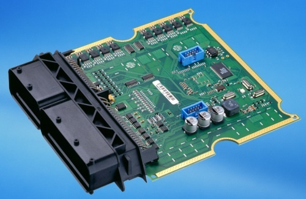

Hardware Terminology
Input Device
An Imput Device is any hardware that connects to a primary device (computers, phones). Every computer would come with imput devices such as a keyboard and mouse or a touchpad. External imput devices could be gamepads, graphics tablet, pen or stylus, remote, webcams. Imput devices sends signals to a device though cabes or wireless transmissions. Having imput devices is important because it allows to user to interact with the information on the device.
Back to Contents
Output Device

Output devices is any hardware that receives data from a primaty device usually a computer. An example of an output device could be your monitor of your computer displaying a word document your typing up. Some examples could be printers, TV, headphones, projector, and, monitors. Back to Contents
Central Processing Unit (CPU)

A CPU or a Central Processing Unit is the brain of a device. It takes all the instructions from hardware and software. It would take the inputs from imput devices and interpret the information though an output device. Back to Contents
Arithmetic Logic Unit (ALU)

ALU short for arithmetic logic unit is a digital circuit with an arithmetic unit and a logic unit. ALU performs mathematical calculations such as OR and AND and is the a memory unit and the imput/output controllers. Back to Contents
Control Unit

The control unit or CU decoded the instructions sent by the main memory and sends it to the ALU to execute the commands. this unit lets the logic unit, memory, and imput output devices know how to respond when instructions are being recived. Both CPUs and GPUs utilize this control unit. Back to Contents
Random Acsess Memory (RAM)
The RAM (random access memory) is a hardware inside a device that allows information to be stored. This type of memory module can access the memory much faster than a CD or a hard drive. But unlike CDs, RAM needs power to keep the data, if the power is turned off, the data inside th RAM will be lost. Back to Contents
Optical Memory
Optical memory uses a lazer beam to store and retrieve data. Optical memories exist as CDs DVDs and Blue rays. The beam would imprint data on a CD by indenting pits on the polycarbonate plastic. Back to Contents
Magnetic Memory
Magnetic memory is one main way data is stored on a megnetic medium. The data on a mageteic memory is stored on a circular platter made of non magnetic materials. The surface is coated with a magnetic material is read with a head. Back to Contents
Flash Memory
Flash memory is a memory drive that wil store data without needing a power sorce to reain data unlike RAM. Inside the chip, data is stored in cells protected by floating gates. Back to Contents
Logic Gates
The logic gates are use to carry out logic based operations on single or multiple binary imputs. There are multiple different logic gates such as the OR, AND, NOT, and XOR Gates. Back to Contents